True tales of courage, wisdom, and a God who never gives up on his children — retold just for you!
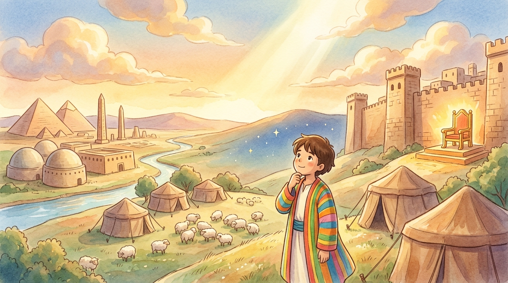
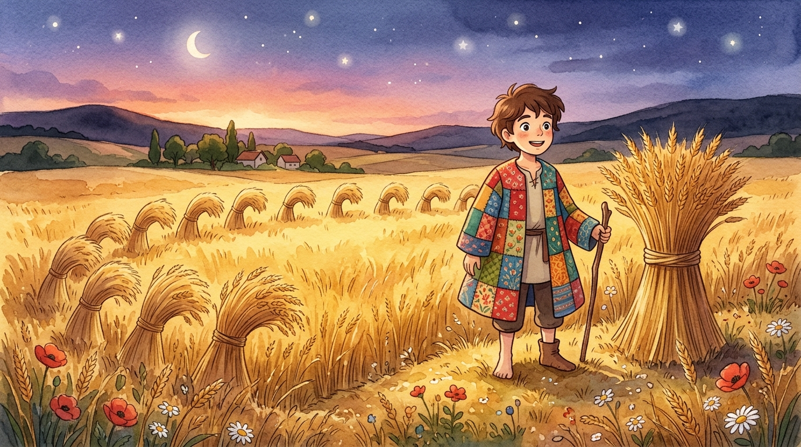
Sold by his own brothers… and it was step one of God's amazing rescue plan.
Read the story →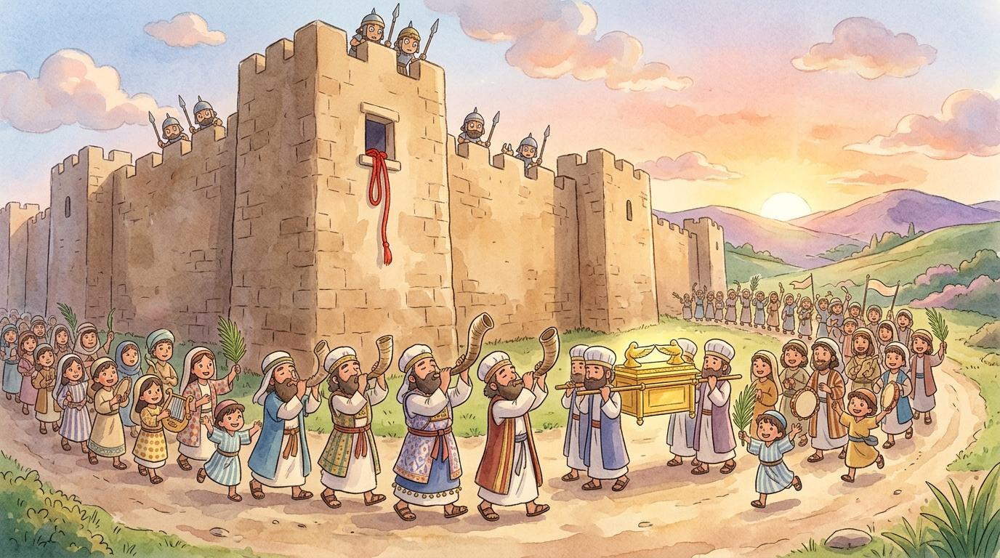
The strangest battle plan in history: march, march, march… and SHOUT!
Read the story →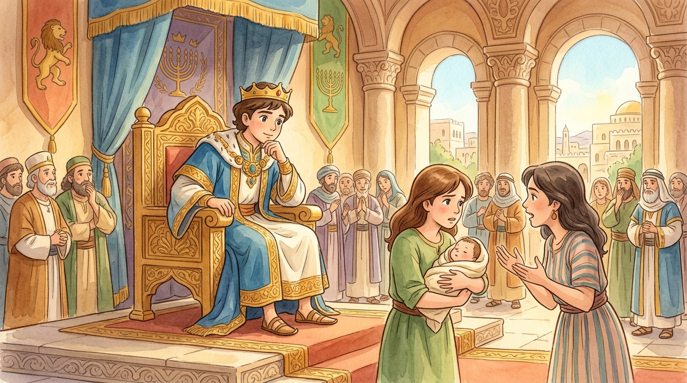
Two mothers, one baby — and a test only true love could pass.
Read the story →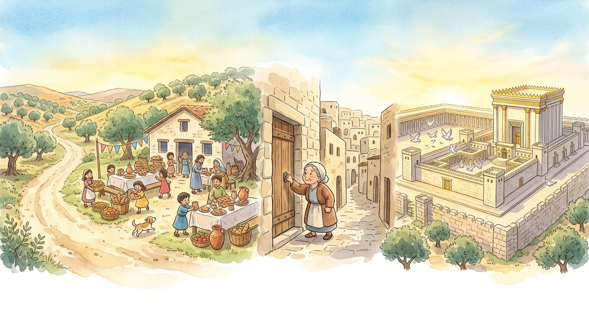
He wanted the money, not the family. Then the money ran out…
Read the story →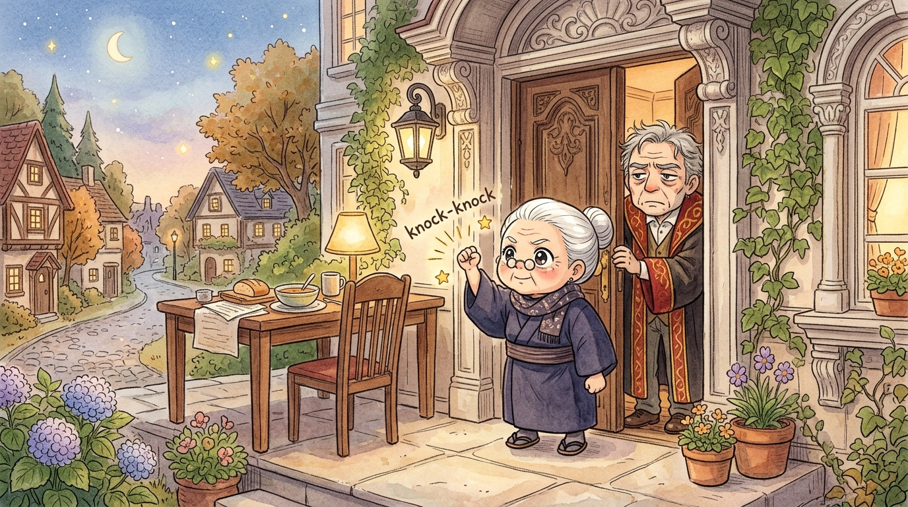
Knock. Knock. KNOCK. The grumpiest judge in town meets his match.
Read the story →One prayed like a champion. One could barely look up. Guess whose prayer God heard?
Read the story →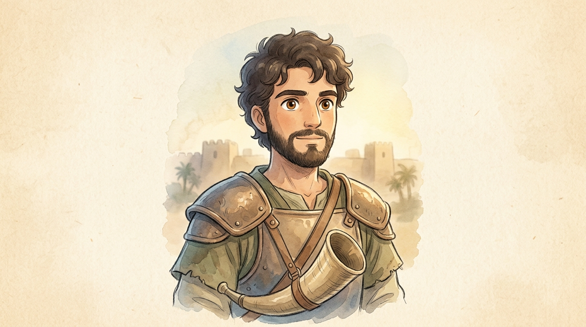
JoshuaIsrael's brave leader Took over from Moses and trusted God's battle plan, no matter how strange. Jericho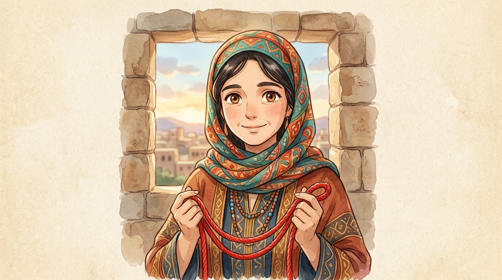
RahabThe brave woman of Jericho Hid the spies, hung the scarlet cord, and saved her whole family. Jericho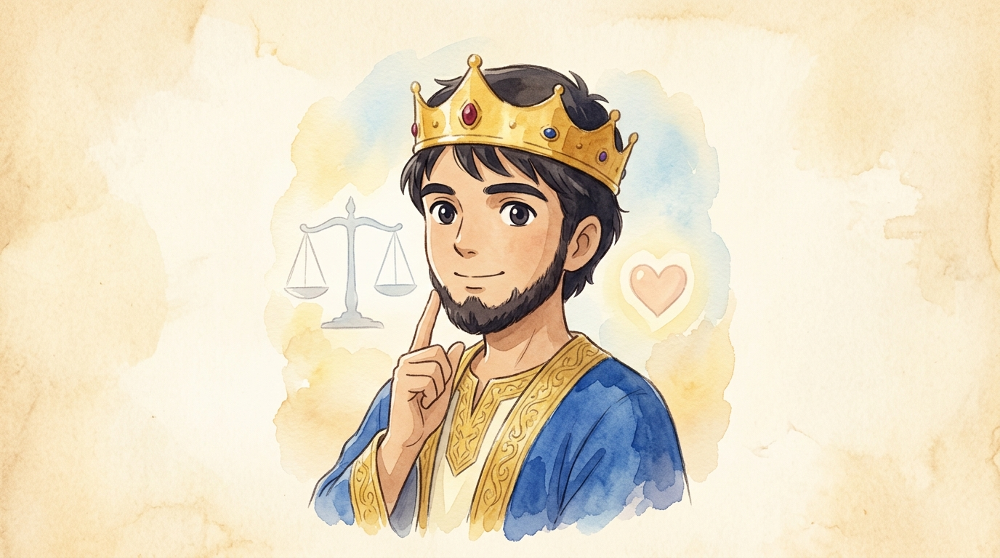
King SolomonThe wisest king Asked God for wisdom instead of gold — and got both. The Hardest Case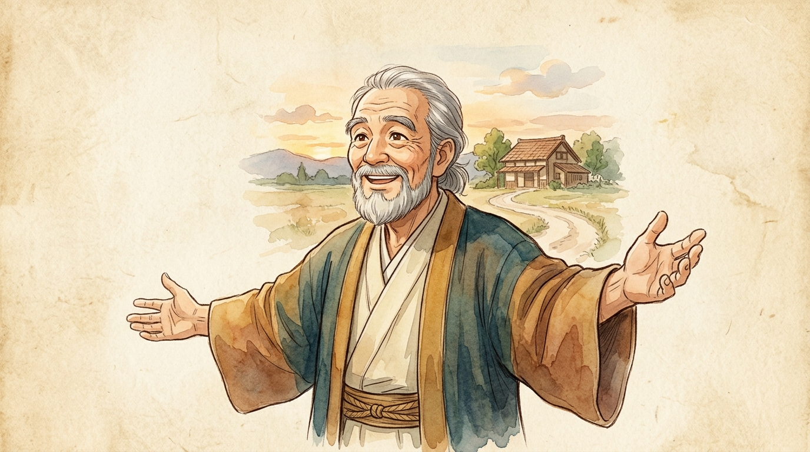
The Loving FatherA picture of God Watched the road every single day — then RAN to welcome his son home. Runaway Son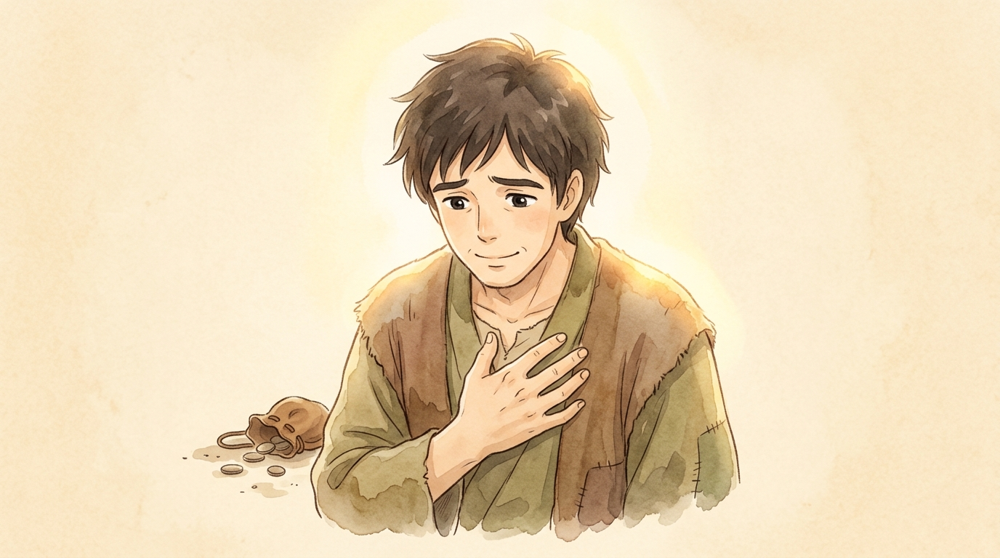
The Tax CollectorThe humble one Seven honest words — and he went home right with God. Two Prayers